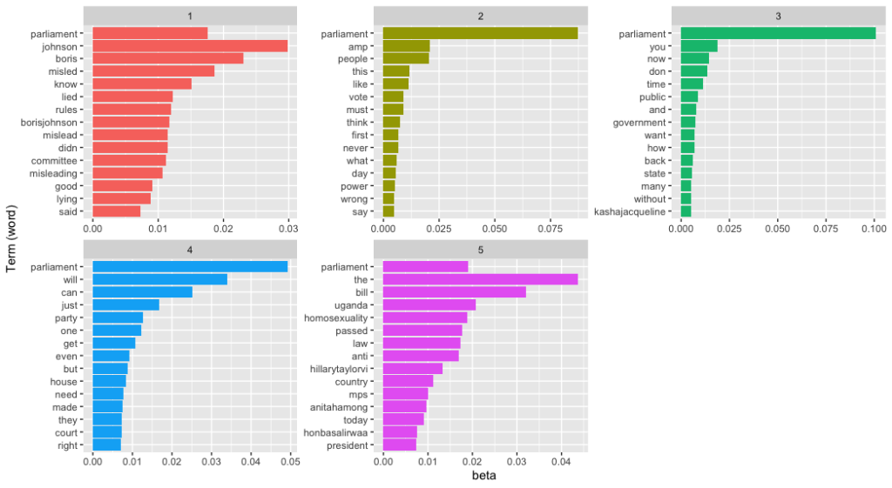

Topic modelling with Twitter text
Topic modeling is a statistical technique utilised to identify themes or topics within a vast collection of texts. One of the most popular algorithms used for topic modeling is Latent Dirichlet Allocation (LDA) which is used to uncover the underlying topics present in a ‘corpus’ of documents.
LDA helps analysts to understand which subjects are being discussed in text and to group similar documents together. This makes it easier to see patterns and trends in your data, understand the main themes of textual data, and make better decisions based on the information available.
In this post I’ll provide a demonstration of Latent Dirichlet Allocation on Twitter data. I’ll focus on three main reasons for using LDA;
Data reduction. LDA can group related documents into topics By reducing the complexity of the data by it can be easier to analyse and identify patterns.
Topic identification. LDA can be used to identify the most important topics within a large corpus of documents. This can provide insight into the topics that are most frequently discussed.
Improved understanding. LDA can help to gain a deeper understanding of the content within your data.
1. Create a corpus of tweets
I begin as before with extracting a sample of tweets…
library(rtweet)
library(httr)
library(dplyr)
library(qdap)
library(qdapRegex)
library(tm)
# authorise
auth_setup_default()
# get 2000 tweets with our required hashtag
twtr <- search_tweets("parliament",
n = 2000,
include_rts = FALSE,
lang = "en")… then keep only the text data before tidying. Removing special characters and URLs will remove some tweets altogether but that’s partly the point.
# create data frame of tweet text
tweet_text <- twtr$text
# remove special characters
tweet_text_no_url <- rm_twitter_url(tweet_text)
tweet_text_az <- gsub("[^A-Za-z]", " ", tweet_text_no_url)
head(tweet_text_az)Then it’s time to make the corpus (where tweets become documents) and tidy some more with the tm package.
# create a corpus (transform tweets into documents)
tweet_corpus <- tweet_text_az %>%
VectorSource() %>%
Corpus()
# remove stop words, extra whitespace and transform to lower case
tweet_corpus_no_stop <- tm_map(tweet_corpus, removeWords, stopwords("english"))
tweet_corpus_lower <- tm_map(tweet_corpus_no_stop, tolower)
tweet_corpus_docs <- tm_map(tweet_corpus_lower, stripWhitespace)Before beginning my analysis I’ll have to create the Document Term Matrix from the corpus.
# create a DTM
dtm <- DocumentTermMatrix(tweet_corpus_docs)Checking out the details of the DTM I see that I have 2000 documents with >8800 terms. Several rows of the documents are shown below with the terms that appear in each document. Note there’s a lot of zeros because some terms are found only rarely. This is also why ‘sparcity’ is 100%.
<<DocumentTermMatrix (documents: 2000, terms: 8825)>>
Non-/sparse entries: 33734/17616266
Sparsity : 100%
Maximal term length: 38
Weighting : term frequency (tf)
Sample :
Terms
Docs amp boris can ireland johnson northern parliament people the will
1063 0 0 0 0 0 0 2 0 1 0
1119 0 0 0 0 1 0 1 0 2 0
1169 0 1 0 0 0 0 2 0 1 0
1223 0 0 0 0 0 0 1 0 1 0
1471 0 0 0 0 0 0 1 0 1 0
1550 0 0 0 0 0 0 1 0 0 0
1769 0 0 0 0 0 0 1 1 1 0
533 0 0 1 0 0 0 1 0 1 0
917 0 0 0 0 2 0 1 1 1 0
978 1 0 0 0 0 0 1 1 1 0 ...Rows (documents) that don’t have any terms – where the terms columns are all zeros – can be removed. Those documents won’t tell us anything anyway.
Summing the word counts in each row is straighforward with apply.
# sum word counts in each document
row_terms <- apply(dtm , 1, sum)
# keep rows where sum is > 0
tweet_dtm <- dtm[row_terms > 0, ]2. Create a topic model with LDA()
Here’s the fun part. Running the LDA is simple. I just need to decide how many topics I want to start with. Usually I choose an odd number. I’ve no idea why I do it this way. I’ll start with five.
# the lda function is within the topicmodels package
library(topicmodels)
tweet_lda5 <- LDA(tweet_dtm, 5)And inspect the results. I should have five topics and be able to view the top terms under each of them using the terms() function.
# and check the results
terms_lda5 <- terms(tweet_lda5, 15)
terms_lda5 Topic 1 Topic 2 Topic 3 Topic 4 Topic 5
[1,] "parliament" "parliament" "parliament" "parliament" "parliament"
[2,] "the" "the" "party" "johnson" "northern"
[3,] "opposition" "right" "amp" "boris" "ireland"
[4,] "government" "people" "will" "the" "that"
[5,] "can" "can" "people" "misled" "will"
[6,] "amp" "will" "boris" "committee" "like"
[7,] "get" "now" "gave" "lied" "the"
[8,] "bill" "just" "get" "rules" "there"
[9,] "mps" "rahul" "vote" "misleading" "great"
[10,] "petition" "act" "gbnews" "mislead" "yes"
[11,] "anti" "member" "not" "partygate" "democracy"
[12,] "people" "amp" "blair" "defence" "say"
[13,] "will" "european" "job" "didn" "always"
[14,] "they" "crisis" "you" "evidence" "majority"
[15,] "homosexuality" "session" "make" "lying" "says" 3. Topic naming for LDA data
It’s possible to see that there’s overlap between the topics but there are five1 as requested. Let me take a stab at naming each;
1: Parliament’s latest discussion of a bill related to homosexuality.
2: A more general topic. Possibly a mix of topics involving Europe & Rahul Gandhi.
3: Discussion on GBNews about Tony Blair’s latest comments regarding Boris Johnson.
4: Partygate. Without a doubt this topic centres on BoJo, his actions and the resulting enquiry.
5: Northern Ireland, possibly discussing issues surrounding the region, such as its relationship with the UK and Brexit.
LDA is a fairly standard method of topic modelling and as shown above it’s not perfect. It is up to the analyst to decide how many topics to create, then to decide how much the topics overlap. Finding topics that do not overlap or repeat can be difficult.
At this point one might take a moment to wonder if it’s worthwhile creating a visualisation like a cluster plot or dendogram. I advise against it. Topic modelling is based on word counts and some words will appear in multiple documents as seen above. Clustering on the other hand is based on the distance between objects and each object belongs in a single cluster.
4. Plotting word probabilities
Remember, LDA assumes that each document in the corpus is a mixture of a number of topics and that each word in a document is related to one of those topics. With Bayesian inference, LDA identifies the most probable set of topics for each document and the most probable set of words for each topic.
The resulting output is a set of topics represented by a group of words with associated probabilities and a topic distribution for each document represented by a probability distribution over the set of topics. OK?
I’ll plot those probabilities next.
I’ll use the same data above but this time demonstrate a few more options available in LDA(). The output can then be passed to tidy() and finally to ggplot.
library(tidytext)
tweet_lda_gibbs <- LDA(tweet_dtm,
k = 5,
method = "Gibbs",
control = list(seed = 33)
) %>%
tidytext::tidy(matrix = "beta")Note: In the snippet above it’s necessary to use tidytext::tidy in full possibly due to a bug in the topicmodels library.
Now I’ll arrange the word probabilities by topic and transform the terms into factors. Factors are necessary because one single word can appear in many topics. For example, the word ‘parliament’ can be used in each of the topics shown above and have a different context in each.
library(tidyverse)
tweet_word_probs <- tweet_lda_gibbs %>%
group_by(topic) %>%
top_n(15, beta) %>%
ungroup() %>%
mutate(term_n = fct_reorder(term, beta)) And finally…
#plot word probabilities
ggplot(tweet_word_probs,
aes(term_n,
beta,
fill = as.factor(topic)
)
) +
geom_col(show.legend = FALSE) +
coord_flip() +
facet_wrap(~ topic, scales = "free")The resulting image shows much more clearly that the topics involve not just the UK parliament and BoJo’s (alleged) breach of the rules but also the Ugandan parliament. Topics 3 and 5 are possibly the same topic as they concern Kasha Jacqueline Nabagesera and the Ugandan government’s criminalisation of LGBT rights. Creating a visualisation of word probabilities has helped to determine the quantity of topics. It’d be a good idea now to go back and refine the model.

5. Conclusion
As the world becomes increasingly data-driven, tools like Latent Dirichlet Allocation (LDA) have emerged as powerful instruments for extracting insights from large datasets. However, as with any tool, there are risks of misuse and misinterpretation. The similar topics in this post are a prime example.
The problem of similar topics in LDA analysis is not uncommon and it can be attributed to a variety of factors. In some cases it may be due to poor quality data with noise and irrelevant content obscuring the underlying patterns. Alternatively, an insufficient number of topics or homogeneity in the content being analysed can also cause LDA to group together different topics into one. Additionally, overfitting and slack pre-processing techniques can also lead to similar topics.
The consequences of similar topics in LDA analysis can be severe. If the results are used for decision-making purposes, the similarity can lead to incorrect conclusions and actions. It is crucial that data analysts exercise caution and thoroughly investigate the causes of similar topics.
Furthermore, the LDA algorithm must not be used in isolation. It is imperative that researchers combine it with other techniques and knowledge to identify the underlying patterns that LDA cannot detect on its own.
In conclusion, LDA is a powerful tool, but its results are not infallible. A comprehensive approach to data analysis that includes multiple techniques and expert knowledge is necessary to ensure accurate and reliable results.
Footnotes
One quick thought at this point is that our data seems to be politically divisive. It would be interesting to attempt a sentiment analysis of our corpus and see what arises. I’ll do that in my next post.↩︎